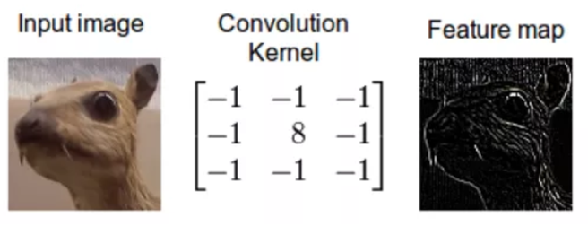
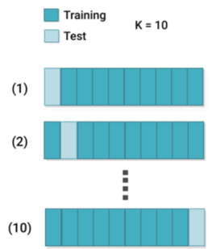

Contenu des interactions en utilisant la vision artificielle
Maintenant qu'il a été démontré des techniques permettant à un robot de service de naviguer socialement et d'initier des interactions, il est nécessaire de proposer du contenu lors de ces interactions. Dans le cadre du projet Reachy mobile, il a été décidé de faire jouer le robot au tictactoe (soit morpion) et au chifoumi (pierre feuille ciseaux) car ces jeux sont ludiques et peuvent divertir un large public. La compréhension du jeu pour le robot se base sur des algorithmes de vision, et notamment de reconnaissances d'objets. Pour le tictactoe, il est nécessaire de pouvoir reconnaitre des cubes et des cylindres afin de déterminer la stratégie de jeu. Pour le jeu du chifoumi, il est nécessaire de détecter si le geste de la main est une pierre, une feuille ou un ciseaux.
Méthodes pour la détection d'objets (machine learning)
Les deux jeux nécessitent de mettre en place des méthodes pour la détection d'objets, deux approches co-existent pour ce problème, le traitement d'image "classique" et le machine learning, comme le précise [@zhao_object_2019], les modèles de machine learning permettent d'apprendre des caractéristiques sémantiques et in fine sont adaptés pour le problème de détection par leur capacité d'adaptabilité aux différentes conditions et leur lien avec la sémantique de l'objet. Les modèles de Machine Learning sont classés en trois grandes catégories : supervisé, non supervisé et apprentissage par renforcement. Si le modèle est un modèle supervisé, il peut être de 2 types ou sous-catégories : modèle de régression ou de classification.
L'apprentissage supervisé consiste à apprendre à une fonction à faire correspondre une entrée à une sortie en se basant sur des exemples connus (des paires entrée-sortie). Par exemple, si un ensemble de données avec deux variables est à disposition, l'âge (en entrée) et la taille (en sortie), il serait possible de mettre en œuvre un modèle d'apprentissage supervisé pour prédire la taille d'une personne en fonction de son âge. Les algorithmes dits non supervisés ne sont pas entraînés par les data scientist. Ils dépendent de méthodes d'apprentissage approfondie pour identifier des patterns en passant au peigne fin des ensembles de données d'entraînement non étiquetées, puis en observant les corrélations. Les modèles entraînés avec cette méthode ne sont pas dirigés pour trouver un résultat ou identifier des données en particulier. L'apprentissage par renforcement est un modèle d'apprentissage comportemental. L'algorithme reçoit un feedback de l'analyse des données et guide l'utilisateur vers le meilleur résultat. L'apprentissage par renforcement diffère des autres types d'apprentissage supervisé, car le système n'est pas formé avec un ensemble de données exemple. Au lieu de cela, le système apprend plutôt par le biais d'une méthode d'essais et d'erreurs. Par conséquent, une séquence de décisions fructueuses aboutit au renforcement du processus, car c'est lui qui résout le plus efficacement le problème posé.
Pour choisir une méthode de machine learning il faut comprendre et savoir pourquoi choisir une méthode plutôt qu'une autre : Le problème est-il récurrent et défini ? Ou bien, l'algorithme devra-t-il prédire de nouveaux problèmes ? Si l'algorithme doit prédire de nouveaux problèmes il faudra se pencher vers un modèle non supervisé, si l'algorithme doit prédire un problème récurrent et connu il sera conseillé d'utiliser des modèles d'apprentissage supervisés. Le problème de l'apprentissage supervisé est que le temps de mise en place, la création du jeu de données, l'étiquetage de chaque données est fastidieux et long à effectuer. A contrario, un modèle d'apprentissage non supervisé ne nécessite pas toutes ces étapes. Pour ce qui est des modèles non supervisés l'algorithme lui-même ne peut pas "inventer" ce qu'est un visage, mais il peut essayer de regrouper les données en différents groupes, par exemple, il peut distinguer que les visages sont très différents des paysages, qui sont très différents des chevaux. Le choix d'un modèle ou d'un autre dépend entièrement de la problématique du sujet [@zhao_object_2019].
Selon la terminologie usuelle il est possible distinguer la détection, de la localisation et de la reconnaissance d'objets [@liu_deep_2019] comme décrit dans la :
-
détection (ou classification) : présence d'une instance de l'objet dans l'image. La détection se fait sur les objets dit générique comme une voiture par exemple.
-
reconnaissance : identification d'une instance spécifique (« Le chien du voisin », « le visage de Donald Trump »...)
-
localisation : situation spatiale précise de l'instance (détectée ou reconnue) dans l'image (cadre englobant ou segmentation de la zone)

Classification
La classification consiste à reconnaître à quelle catégorie appartient une image parmi un ensemble de catégories prédéterminées. Toutes les données auront obligatoirement une seule classe. Il existe différents algorithmes de classification comme les méthodes hiérarchiques, le partitionnement ($k$-means) ou les méthodes probabilistes (Expectation-Maximization algorithm) et bien d'autres encore. Parmi ces algorithmes de classification il est possible de trouver, pour les plus connus:
-
La méthode des $k$ plus proches voisins
-
Le classifieur bayésien
-
La méthode du Support Vector Machines (SVM)
Mais aussi plein d'autres algorithmes comme l'arbre de décision, la régression logistique, le bagging, le boosting et bien d'autres qui sont présenté dans l'article de [@talon_analyse_2018].
Comme le théorème No Free Lunch Theorem l'explique, en l'absence de connaissances spécifiques sur le problème, il n'y a pas de méthode de classification fondamentalement meilleure qu'une autre, autrement dit : sur une infinité de problèmes de classification, en moyenne toutes les méthodes sont équivalentes [@wolpert_no_1997].
Localisation

La localisation d'objet consiste à localiser une instance d'une catégorie d'objet particulière dans une image, généralement en spécifiant une zone de délimitation étroitement rognée centrée sur l'instance. La détection d'objets, au contraire, est la tâche de localiser toutes les instances possibles de tous les objets cibles. La localisation d'objets est également appelée « classification avec localisation ». En effet, l'architecture qui effectue la classification d'image peut être légèrement modifiée pour prédire les coordonnées de la boîte englobante [@liu_deep_2019]. Les réseaux de neurones profonds permettent de faire de la détection avec localisation de l'objet par différentes méthodes comme la segmentation sémantique, la segmentation d'instance d'objet ou la détection d'objet générique avec boites englobantes comme montrer sur la .
Deep Learning
Parmi les techniques de machine learning (ou apprentissage profond), il est possible de trouver les réseaux de neurones artificiels ici, la machine est capable d'apprendre par elle-même, contrairement aux autres modèles de machine learning vu auparavant qui se contentent d'exécuter à la lettre des règles prédéterminées. Les réseaux de neurones artificiels sont inspirés par les neurones du cerveau humain. Ils sont composés de dizaines, voire de centaines de « couches » de neurones, chacune recevant et interprétant les informations de la couche précédente. Plus le nombre de neurones est élevé, plus le réseau est dit « profond ». L'apprentissage en profondeur (Deep Learning) permet aux modèles informatiques d'apprendre des représentations complexes, subtiles et abstraites, entraînant des progrès significatifs dans un large éventail de problèmes tels que la reconnaissance visuelle, la détection d'objets, la reconnaissance vocale, le traitement du langage naturel, l'analyse d'images médicales et la découverte de médicaments.

Dans une version élémentaire, chaque neurone $i$ d'un tel réseau possède un niveau d'activation $x_i$ compris entre $0$ et $1$. Le schéma d'interconnexion entre neurones définit l'architecture du réseau. Une architecture classique consiste à organiser les neurones en couches successives avec des interconnexions limitées aux couches adjacentes comme le montre la .
Le nombre d'articles sur la détection d'objets basée sur l'apprentissage avec réseaux de neurones profond est époustouflant. Il y en a tellement, en fait, que la compilation d'un examen complet de l'état de l'art dépasse le cadre d'un document de longueur raisonnable. Dans le cadre du projet Reachy Mobile, il a été récupéré un travail déjà commencé sur le jeu du tictactoe, déjà documenté. Dans ce projet, c'est le deep learning qui est utilisé pour détecter les pièces et cases vides. Il convient donc s'intéresser aux réseaux de neurones profonds et plus précisément aux réseaux convolutifs. Trois principaux types d'algorithmes de reconnaissance d'objet existent, pour lesquels la nature de ce qui est prédit est différent. Ils sont décrits dans la .

Les réseaux R-CNN sont des réseaux qui contiennent des couches de neurones convolutionnels (Region with Convolutional Neural Networks, R-CNN). Les réseaux R-CNN sont des algorithmes de détection d'objet qui segmentent l'image d'entrée pour trouver des zones délimitantes pertinentes, puis appliquent un algorithme de classification pour trouver les objets les plus probables d'apparaître dans ces zones.
Le réseaux de neurones mobilNet fait partie de la famille des réseaux de neurones convolutionnel (Convolution Neural Network ou CNN). Comme décris sur la , un CNN est composé de plusieurs couches, comprenant la convolution, le ReLU, le Pooling, le Flattening, et la Full connection [@noauthor_cs_nodate].

Afin de déterminer le contenu de l'image, les réseaux CNN passent par deux phases :
-
La phase de Feature Learning, composée de plusieurs convolutions successives. A pour but de faire sortir certaines caractéristiques de l'image.
-
La phase de Classification, prédisant si l'image en entrée est une voiture, un camion, un vélo, etc.

La convolution consiste à appliquer un filtre sur l'image. Pour cela un kernel se déplace sur la totalité de l'image d'entrée et agit comme un filtre afin de produire une image en sortie. Le kernel a pour but de détecter des formes particulières. Il est possible d'obtenir le résultat sur la .
Dans MobileNet, la convolution est remplacée par une Depthwise Separable Convolution. Celle-ci se compose de 2 étapes : le Depthwise Convolution et la Pointwise Convolution. L'architecture des MobileNets est une architecture composée de 28 couches dont 13 Depthwise Convolution et 13 Pointwise Convolution
Les réseaux MobilNet-V2 et Mobilnet-V3 obtiennent de meilleures performances qu'un réseau Mask R-CNN,qui est le réseau généralement utilisé pour la détection d'objet. La séparation de la convolution en deux temps permet une économie de calculs, un allègement de la mémoire. Ces optimisations ont également un bénéfice sur le temps de réponse et sur la consommation énergétique, tout en ayant un faible impact sur la précision, rendant son utilisation adaptée aux systèmes embarqués [@howard_mobilenets_2017].
Amélioration des performances d'un réseau de neurones profonds
Il y une chose à étudier dans l'évaluation des modèles, ou plutôt un élément à surtout éviter : l'overfitting.
Il peut tout à fait y avoir des modèles qui sont très bons dans la prédiction de jeux de données d'entraînement, mais qui obtient des moins bonnes prédictions pour le jeu de test. Cela veut dire que le réseau de neurones a sur-appris (overfit).
Par exemple, un élève qui révise ses leçons et qui les apprend par cœur se trouve avoir comme résultat à l'évaluation un 2/20. Cela signifie qu'il a bien trop appris la leçon dans le cadre de ce qui avait dans son cours, mais qu'il n'a pas réussi à généraliser sur d'autres exercices. Les modèles de Machine Learning possèdent le même défaut. Pour éviter cela, plusieurs réglages peuvent être mis en place pour éviter l'overfitting mais également améliorer les performances du réseau.
Amélioration des performances avec les données
Un jeu de données d'apprentissage doit contenir un nombre suffisant d'images annotées des catégories du sujet de classification étudié. L'approche classique lors de la création du jeu de données, est d'augmenter le jeu donné. Il existe plusieurs méthodes d'augmentation de données, dont l'application de transformations géométriques comme le recadrage, le changement d'échelle, la rotation, l'effet miroir et d'autres sur les images du jeu de données d'apprentissage qui permettent de créer ou de redimensionner de nouvelles données [@daou_amelioration_nodate]. Cette approche permet au modèle CNN d'apprendre des caractéristiques d'images plus diversifiées et par suite pouvoir prédire correctement la catégorie de l'image capturée. Par exemple, avec les données d'images photographiques, vous pouvez obtenir de meilleures performances en déplaçant et en faisant pivoter de manière aléatoire des images existantes. Cette méthode d'augmentation du jeu de données permet que lorsqu'une augmentation de données est effectué sur une image de test (par exemple, une rotation de sa position normale ou un changement d'échelle) le système de localisation sache s'adapter au changement, et que finalement il soit plus apte à reconnaître correctement l'objet.
Il existe plusieurs méthodes de partitionnement du jeu de donnée en paquet de d'entraînement et de test comme la méthode du Hold-out consiste à diviser l'ensemble de données en deux parties : comme expliqué sur la , l'ensemble d'apprentissage et l'ensemble de test. En général, 80 pourcent de l'ensemble de données est consacré à l'ensemble d'apprentissage et 20 pourcent à l'ensemble de test. L'entraînement est lancé sur l'ensemble d'entraînement et le modèle est validé sur l'ensemble de test. La validation croisée Hold-out est la technique la plus simple et la plus courante pour créer un jeu de donnée permettant de bonnes performances [@noauthor_31_nodate].

Le problème avec la méthode du Hold-out, est que si le jeu de donnée d'entraînement n'est pas représentatif du jeu de test, le réseau ne pourra pas prédire sur des données ou il n'a pas était entraîné. En raison de la variabilité de l'échantillon entre les ensembles de train et de test, le modèle peut donner de meilleures prédictions sur les données de train, mais ne parvient pas à généraliser sur les données de test. Il existe d'autres méthodes de cross validation qui permettent de partitionner le jeu de données de façon plus intelligente. La méthode du Leave-One-Out, la méthode du K-Fold (comme montrer sur la cette méthode consiste à découper le data set en k échantillons. On sélectionne x échantillons pour constituer l'échantillon d'apprentissage. Les k-x échantillons restants permettront d'évaluer la performance du modèle. Pour construire le modèle suivant on sélectionne les échantillons différemment de manière à ne jamais avoir les mêmes échantillons d'apprentissage et de validation) ou encore la méthode du Stratified-K-Fold [@noauthor_cross-validation_2020].

Amélioration des performances grâce au réglage des algorithmes

Le Grid search est une méthode d'optimisation (hyperparameter optimization) qui permet de tester une série de paramètres et de comparer les performances pour en déduire le meilleur paramétrage d'entraînement. Il existe plusieurs manières de tester les paramètres d'un modèle et le Grid Search est une des méthodes les plus simples [@noauthor_32_nodate]. Pour chaque paramètre, il est déterminé un ensemble de valeurs à tester comme sur la . Le Grid Search croise simplement chacune de ces hypothèses et va créer un modèle pour chaque combinaison de paramètres. Puis, les différents modèles de paramétrage doivent être testés avec des méthodes de validation croisées vu plus haut. En règle générale, certains hyperparamètres tel que le batch size le nombres d'époques ou le nombres de steps sont les premiers paramètres à étudier pour améliorer les performances de l'entraînement. Pour ce qui est du batch size, il est nécessaire de paramètrer par rapport à la RAM du GPU de la machine sur lequel le réseau est entraîné. Ainsi, plus la taille du batch size est grande, plus le nombre d'échantillons propagés à travers le réseau de neurones est important. Il est aussi important de regarder les courbes de loss qui permettent de voir quand le réseaux est assez entraîné : par exemple, à partir de 9 000 steps le réseau peut être stabilisé, cependant au-delà on pourrait observer de l'overfitting. Ces implémentations permettent une meilleure précision. En contrepartie, elles prennent aussi beaucoup de temps à l'entraînement et doivent être paramétrées correctement. En effet, elles peuvent augmenter le risque de sur apprentissage. Tout est question d'équilibre entre batch size, epoch et nombre de steps.
De plus, si un nombre insuffisant de neurones est utilisé dans l'architecture du réseau, le réseau sera incapable de modéliser des données complexes et l'ajustement résultant sera médiocre. Si trop de neurones sont utilisés, le temps d'apprentissage peut devenir excessivement long et, pire encore, le réseau peut sur-apprendre les données. Lorsqu'un sur-apprentissage se produit, le réseau commence à modéliser le bruit aléatoire dans les données. Le résultat est que le modèle s'adapte extrêmement bien aux données d'apprentissage, mais qu'il se généralise mal aux nouvelles données inédites.
Pour trouver la dimension optimale d'une couche cachée il est nécessaire d'effectuer des essais, il n'est pas souhaitable d'avoir trop de neurones, mais il doit y avoir suffisamment de neurones pour que le réseau soit capable de capturer les complexités de la relation entrée et sortie. D'après le Dr Heaton dans son livre Introduction to Neural Networks with Java [@heaton_introduction_2008], trois règles empiriques permettent de choisir la dimension d'une couche cachée :
-
Si le réseau n'a qu'un seul neurone de sortie et que la relation entrée et sortie est assez simple, la taille de la couche cachée est égale aux deux tiers de la dimension d'entrée.
-
Si le réseau à plusieurs neurones de sortie ou si la relation entrée/sortie est complexe, la dimension de la couche cachée égale à la dimension d'entrée plus la dimension de sortie (mais elle doit rester inférieure à deux fois la dimension d'entrée).
-
Si la relation entrée/sortie est extrêmement complexe, la dimension de la couche cachée doit être inférieure à deux fois la dimension d'entrée.
D'où les règles suivantes :
$$N = \textrm{ nombre de neurones couches cachés}$$
$$Ne = \textrm{ taille de la couche d'entrée}$$
$$Ns = \textrm{ taille de la couche de sortie}$$
$$N = \dfrac{2}{3} \textrm{*Ns}$$
$$N < \textrm{2*Ne}$$
Dans le cadre du jeu du tictactoe sur le robot Reachy, il va être utilisé des algorithmes de Deep Learning pour détecter les objets dans une images. Afin d'obtenir de bonnes performances et une adaptabilité à l'environnement requise par le projet (variabilité de l'environnement dû au déplacement du Reachy lors d'évènements), l'utilisation des réglages des hyperparamètres et la validation croisée seront utilisé.